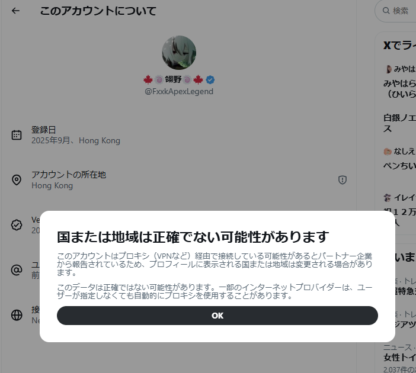
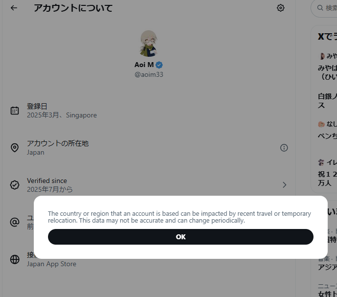
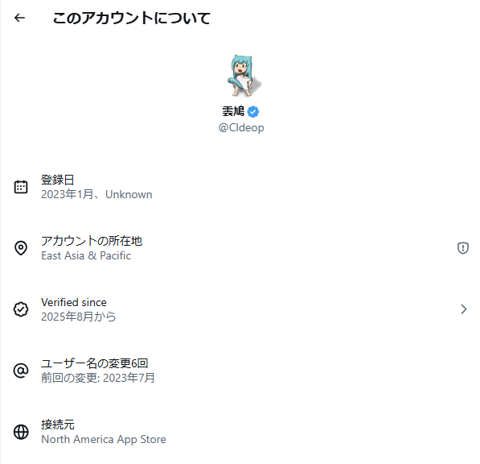
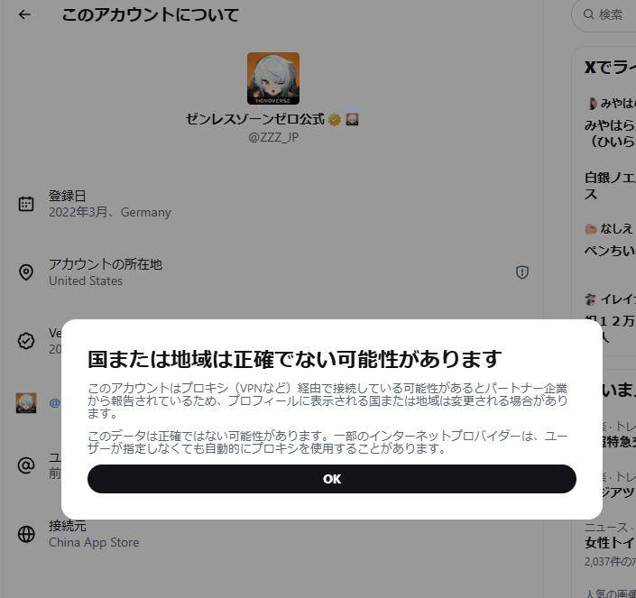

Aoi M
@aoim33
综合来看，这种方式并不能充分作为「人就是在那里」或者「人就不在那里」的依据




Aoi M
@aoim33
关于 IP 地址的显示机制
根据目前的观察，如果 IP 地址如果足够干净，甚至是个人本人就在那里的话应该是不会显示类似 国または地域は正確でない可能性があります 的提示的（如图 2 ，3）
所以可以通过这个方法判断使用的梯子的纯净度（如图 1 @FxxkApexLegend 和图 4 @ZZZ_JP ）
倒是会显示 IP https://t.co/FrS5WzWHoW